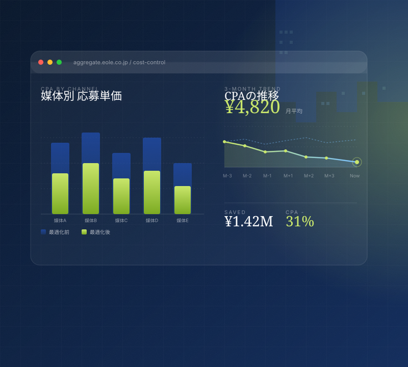
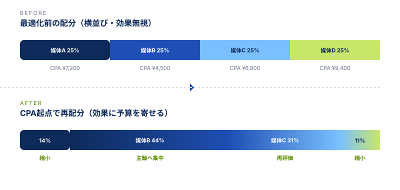

CPAが「なんとなく高い」で止まっている
媒体別・原稿別・職種別に分解されておらず、改善する場所が見えない。月次レポートも前月比だけで判断材料が薄い。
応募単価が下がらないのは、媒体や原稿が悪いからではなく、
「予算配分の根拠」と「効果計測の粒度」が合っていないからかもしれません。
aggregateは、現状の採用費を媒体・原稿・期間・職種で分解し、改善余地が眠っている場所を「数字」で示します。

レポートの数字を経営層に説明する場面ほど、構造の不在が露呈します。媒体・原稿・職種の3軸で分解されたサマリーがあれば、判断材料は「感覚」ではなく「事実」になります。
媒体担当・採用担当・経営層の間で、コストの判断材料が分断されていないか。
現場で頻発している採用費の課題を整理しました。
媒体別・原稿別・職種別に分解されておらず、改善する場所が見えない。月次レポートも前月比だけで判断材料が薄い。
「過去から続いているから」「営業との関係で」といった理由で、効果が見えない出稿が惰性で続いている。
経営層に「なぜこの媒体にこの金額か」を説明できる資料がなく、毎期同じ配分が踏襲されている。
媒体ごとの管理画面を行き来しているだけで、横串でCPA・応募率・採用率を比較する仕組みがない。
何を改善すれば応募単価が下がるのか、優先順位が決まらない。改善項目のチェックリストもない。
「いくら下がれば、年間でどれだけ採用費が浮くか」という採算シミュレーションができていない。
下記は構造分析を実施した場合の典型的な変化イメージです（業種・媒体構成によって幅があります）。
月平均CPA
改善試算ベース

媒体担当の経験則と経営層の意思決定をつなぐために、必要な数字だけを台帳形式に整理して提供します。
主要媒体を横並びで比較。クリック数・応募数・採用数までの遷移を1枚で把握できます。
複数の求人原稿の中で、応募単価に効いている原稿・効いていない原稿を寄与度で並び替え。
どの職種を、どの期間に出稿すべきかを過去データから可視化。閑散期の無駄出稿を抑える根拠になります。
「この媒体に+10%、別媒体を-30%したら、年間採用費はどう動くか」を数字で出します。
役員・経営層に提出する用の1枚資料を作成。「現状」「改善余地」「次の打ち手」を3ブロックで整理します。
いきなり契約や運用代行ではなく、「数字を見る」「改善余地を提示する」までを最初のステップにしています。
媒体構成・採用予算・課題感をオンライン60分でヒアリング。資料の事前送付は不要です。
いただいた数字を媒体・原稿・職種・期間の4軸で再分解。改善余地が大きい順に並び替えます。
分析結果を1枚資料にまとめ、停止候補・増額候補・原稿改善優先度を提示します。
改善後の年間採用費・CPA見込みを試算。経営層への説明資料としてそのまま使える形でお渡しします。
主要求人媒体・採用広告・運用型広告まで、横串で比較可能なフォーマットでまとめます。
媒体・原稿・職種・期間の4軸 × 月次で、改善余地の所在を1枚に整理します。
最初の構造分析・改善余地ご提示までは、費用は発生しません。
経営層提出用の1枚サマリーと、現場用の詳細台帳の2種類でお渡しします。
分析だけ送って終わり、ではありません。改善余地の整理と、経営層への見せ方まで、運用責任者の視点で並走します。
広告費を増やさずに改善余地を見つけるための構造分析を、まずは無料の60分相談からご提供しています。
資料請求のみでもお気軽にお問い合わせください。